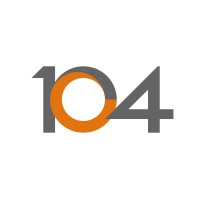
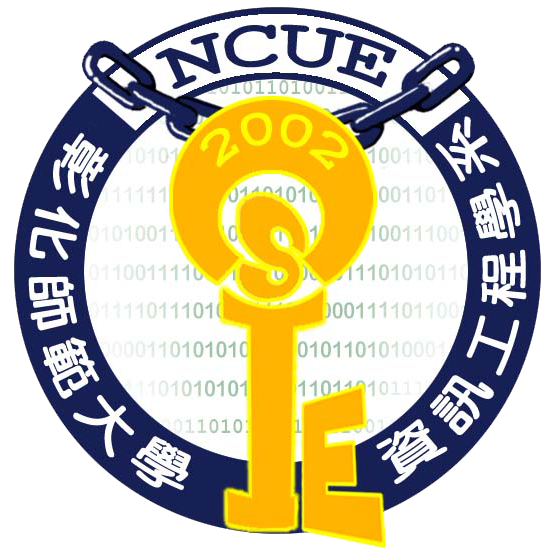
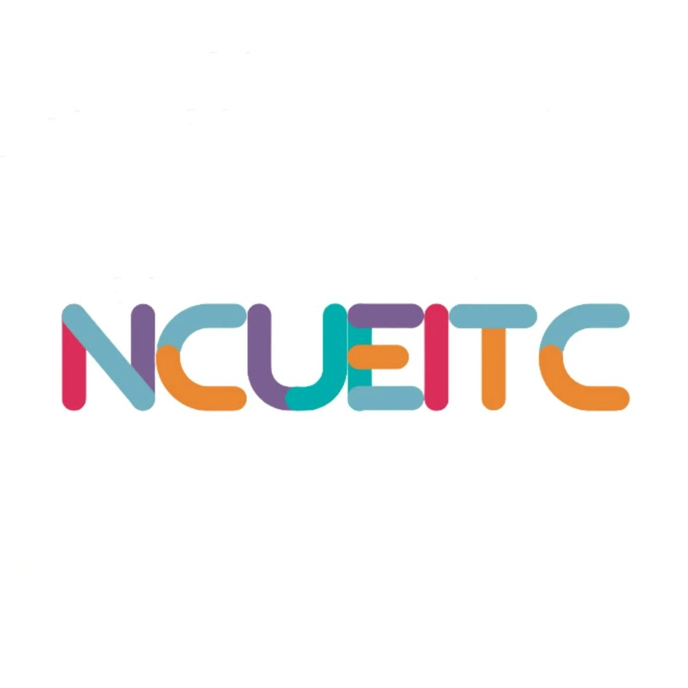
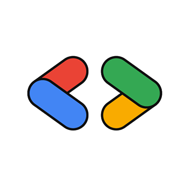
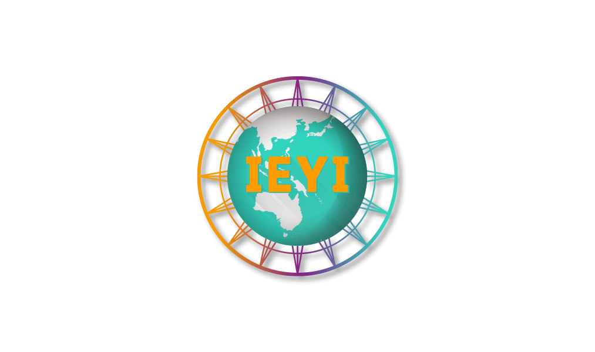

TMY Technology（稜研科技） ↗
Research & Development Intern
- 參與毫米波與通訊技術相關產品研發，協助跨據點的工程協作。
- 將研究需求轉換為可驗證的技術任務，持續紀錄測試與迭代結果。
OPEN TO COLLABORATION · 2026
國立彰化師範大學資訊工程學系學生，目前於 TMYTEK 擔任研發實習生。專注 AI 應用、軟體測試、產品開發與技術社群。
ABOUT 01
我喜歡把模糊的問題拆解成可以執行、測試與迭代的方案。從企業實習、校園大使到社群與競賽，我累積了跨團隊溝通、內容策劃、測試自動化與產品實作經驗。
EXPERIENCE 02




EDUCATION & COMMUNITY 03
Academic background and community leadership

大學日間部 · 大三在學中

協助規劃與執行系上大型活動，負責現場協調與支援。
轉學生交流平台主要負責人之一，負責對外聯繫、活動宣傳與社群經營。

管理社團電腦設備與技術支援，協助辦理程式工作坊與技術交流。

參與跨校技術交流、DevFest Taipei 2024、SITCON 2025 與 COMPUTEX。
SELECTED WORK 05
每個專案都從真實問題出發，結合技術、敘事與使用者體驗。
智慧長照 AI 陪伴系統：以在地語言、記憶確認、安全評估與協作開發，打造更有溫度的日常陪伴。
 YouTube
YouTube智慧記憶項鍊，整合 AI 語音、3D 投影、光導感測與 GPS；負責產品敘事、體驗流程與技術研究，獲 2025 康寧創星家優等獎。
 CC 字幕
CC 字幕擔任組長，以 AI 使用分析、溫和提醒與注意力轉移三階段方法，協助使用者改善「腦腐」與碎片內容成癮。

BRONZE MEDAL · 2022世界青少年發明展臺灣選拔銅牌，展現團隊協作、創意發想與原型實作能力。
AI AVATAR 06
透過 Perxona 互動式 AI Avatar，快速了解我的經歷與作品。